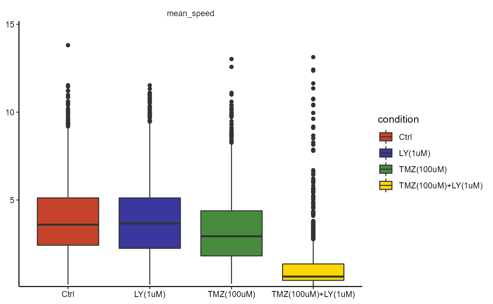
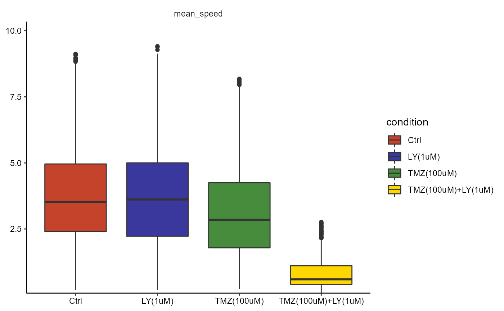

Many downstream analysis pipelines require outlier detection and removal. The package cypro allows to conduct both conveniently.
object <- readRDS(file = "data/example-tracks.RDS")Outliers become visible when plotting statistical summaries such as boxplots or violinplots.
plotBoxplot(
object = object,
variables = c("mean_speed"),
across = "condition"
)
There are several statistical methods to detect outliers mathematically. Currently cypro implements the interquartile range method (more are to come in the near future). To detect outliers use the function detectOutliers().
This function lets you specify three aspects.
The statistical method with which to identify outliers using the argument method_outlier.
If you want outlier detection to be conducted separately for each group of a grouping variable use the argument across to denote it.
Denote the numeric variables that contain the values based on which you want to identify outliers using the argument variable_names.
object <-
detectOutliers(
object = object,
method_outlier = "iqr",
across = "condition",
variable_names = "mean_speed"
)## 23:31:44 Running outlier detection with method = 'iqr'## 23:31:45 Found 276 outliers.## 23:31:45 Done.The results are stored in the cyproobject. To obtain them use getOutlierResults() which returns a list of cell IDs separated by the groups the grouping variable contained as well as the numeric variable under which they were identified as an outlier.
outlier_res <- getOutlierResults(object = object, method_outlier = "iqr")
summary(outlier_res$ids)## Length Class Mode
## Ctrl 1 -none- list
## LY(1uM) 1 -none- list
## TMZ(100uM) 1 -none- list
## TMZ(100uM)+LY(1uM) 1 -none- list
tmz_group <- outlier_res$ids$`TMZ(100uM)`
summary(tmz_group)## Length Class Mode
## mean_speed 42 -none- characterIf you want to obtain only the ids of the cells that were identified as outliers use getOutlierIds(). It summarizes all cell ids from all groups and numeric variables to a character vector.
outlier_ids <- getOutlierIds(object = object, method = "iqr")
length(outlier_ids)## [1] 276
head(outlier_ids)## [1] "CID_103_WI_A5_3_WP_1" "CID_109_WI_A6_3_WP_1" "CID_110_WI_A4_1_WP_1"
## [4] "CID_115_WI_A4_1_WP_1" "CID_163_WI_A5_2_WP_1" "CID_18_WI_A1_1_WP_1"To remove cells that were identified as outliers use removeOutliers(). It makes use of the subset-functions and creates a new cypro object.
object_no_outliers <-
removeOutliers(
object = object,
method_outlier = "iqr",
new_name = "without_outliers"
)## 23:31:45 Removing 276 outliers.## 23:31:45 Subsetting cypro object by cell ID.## 23:31:45 New object name: without_outliers## 23:31:45 Default directory has been reset. Make sure to set a new one via 'setStorageDirectory()'## 23:31:45 A total of 7711 cells remain.## 23:31:45 Done.
plotBoxplot(
object = object_no_outliers,
variables = c("mean_speed"),
across = "condition"
)
As with any other subset*() function you can use printSubsetHistory() to keep track of the manipulations your current object as hand has gone through.
printSubsetHistory(object_no_outliers)##
## First Subsetting:
##
## By: Cell Id
## Reasoning: Outlier removal.
## Method: 'iqr'
## Across: 'condition'
## Variables: 'mean_speed'
## Parent object: example_tracks
## New object: without_outliers
## Cells remaining: 7711